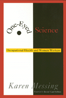

<body bgcolor="#FFFFFF" text="#000000" link="#0000FF" vlink="#CC0000" alink="#CC0000"><center><hr width="350" size="1" align="center" noshade>A provocative look at why researchers are blind to the health problems of women workers<hr width="350" size="1" align="center" noshade><p><a href="https://cdcshoppingcart.uchicago.edu/Cart/ChicagoBook.aspx?ISBN=9781566395977&&PRESS=temple" target="_top">Buy this book!</a> | <a href="https://cdcshoppingcart.uchicago.edu/Cart/Cart.aspx?PRESS=temple" target="_top">View Cart</a> | <a href="https://cdcshoppingcart.uchicago.edu/Cart/Cart.aspx?PRESS=temple" target="_top">Check Out</a></p><p></p></center><!--none//--><h1>One-Eyed Science</h1>
<H2>Occupational Health and Women Workers</H2>
<H2><!-- Foreword by Jeanne Mager Stellman --></H2>
<h3>Karen Messing, foreword by Jeanne Mager Stellman</h3>
<P>cloth 1-56639-597-6 $75.50, Apr 98, <FONT COLOR=#990033>Out of Stock Unavailable</FONT>
<br>paper 1-56639-598-4 $35.95, Apr 98, <FONT COLOR=#990033>Available</FONT>
<BR> 264 pp
5.5x8.2
18&nbsp;tables 1&nbsp;figure
</P><p>After decades of research by the author and her colleagues into what women do in positions such as bank teller, secretary, waitress, nurse, factory worker, and poultry processor, Karen Messing is astonished to find that for many policymakers, researchers, and activists, the topic of women's occupational health doesn't exist.
<p>Messing investigates different types of occupational health issues for women, notably the controversial topics of male/female differences in jobs, health, and basic biology. The pain and suffering of women workers is illustrated in vivid case studies of research into health risks for women in the workplace, including musculoskeletal disease, the hazards of office work, emotional stress, and reproductive hazards.
<p>No longer can employers, administrators, and health professionals ignore the very real problems women encounter in their jobs. Throughout the book, Messing captures the everyday reality of workplace tasks and stresses-from lifting boxes to juggling mental tasks under pressure to the emotional labor of caring for upset or abusive people- by combining on-site observing with listening to the workers' descriptions of their work lives.
<p>Responding to the tough question, why are scientists so unresponsive to the needs of women workers, Messing describes long-standing difficulties in gaining attention for the occupational health of women, ranging from the structure of the grant process and the conferences crucial to the professional life of researchers to the basic assumptions of scientific practice. Messing laments the separation of even most feminist health researchers from workplace concerns and asserts that it is time to develop a science that can prevent women workers' pain and suffering.
<BR>&nbsp;<h2>Excerpt</h2><P>Excerpt available at <a href="http://www.temple.edu/tempress">www.temple.edu/tempress</a></p>
<BR>&nbsp;<h2>Contents</h2><P>
<p>Foreword &#150 Jeanne Mager Stellman
<br>Preface
<br>1. Women Workers and Their Working Conditions
<br>2. Is There a Women's Occupational Health Problem?
<br>3. Are Women Biologically Fit for Jobs? Are Jobs Fit for Women?
<br>4. Who Are Scientists?
<br>5. "Rigor": The Scientific Basis for Funding
<br>6. Constructing Scientific Knowledge
<br>7. Musculoskeletal Problems
<br>8. Office Work and Health
<br>9. Emotional Stressors in Women's Occupations
<br>10. Reproductive Hazards
<br>11. Science and Real Life
<br>12. Changing Science for Women Workers
<br>Notes
<br>Index
</P><BR>&nbsp;<H2>About the Author(s)</H2>
<P><B>Karen Messing</B> is Professor, Department of Biological Sciences, University of Quebec at Montreal, and former Director of the Center for CINBIOSE.</P>
<BR><H2>Subject Categories</H2>
<p><A HREF="/tempress/labor.html" TARGET="_top">Labor Studies and Work</a>
<BR><A HREF="/tempress/health.html" TARGET="_top">Health and Health Policy</a>
<BR><A HREF="/tempress/women.html" TARGET="_top">Women's Studies</a>
</p>
<BR><h2 class="inpageheading">In the series</H2>
<P><I><a href="http://www.temple.edu/tempress/labor_change.html" onMouseOver="window.status='Click for other books in this series!'; return true;" onMouseOut="window.status=''; return true;" target="_top">Labor and Social Change</a></i>, edited by Paula Rayman and Carmen Sirianni.
</p><p><i>Labor and Social Change</i>, edited by Paula Rayman and Carmen Sirianni, includes books on workplace issues like worker participation, quality of work life, shorter hours, technological change, and productivity, as well as union and community organizing and ethnographies of particular occupations.</p>
<p align="center"><a href="https://cdcshoppingcart.uchicago.edu/Cart/ChicagoBook.aspx?ISBN=9781566395977&&PRESS=temple" target="_top">Buy this book!</a> | <a href="https://cdcshoppingcart.uchicago.edu/Cart/Cart.aspx?PRESS=temple" target="_top">View Cart</a> | <a href="https://cdcshoppingcart.uchicago.edu/Cart/Cart.aspx?PRESS=temple" target="_top">Check Out</a></p><p><font face="Arial" size="1"><a href="copyright.html" onMouseOver="window.status='Web Copyright Policy';return true;" onMouseOut="window.status=''" title="Web Copyright Policy">&copy;</a> 2015 <a href="http://www.temple.edu" target="new" onMouseOver="window.status='Link to Temple University home page';return true;" onMouseOut="window.status=''" title="Link to Temple University home page">Temple University</a>. All Rights Reserved. http://www.temple.edu/tempress/titles/1224_reg.html</font></p>